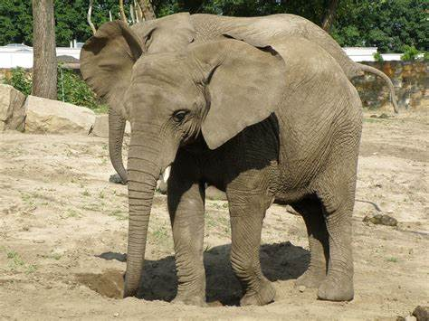

Słoń afrykański
gatunek ssaka z rodziny słoniowatych, największe współcześnie żyjące zwierzę lądowe. Wcześniej uznawany za jeden gatunek wraz ze słoniem leśnym. Zwierzę stadne, zamieszkuje afrykańską sawannę, lasy i stepy od południowych krańców Sahary po Namibię, północną Botswanę i północną część RPA. W starożytności wykorzystywane jako zwierzęta bojowe.

reklama